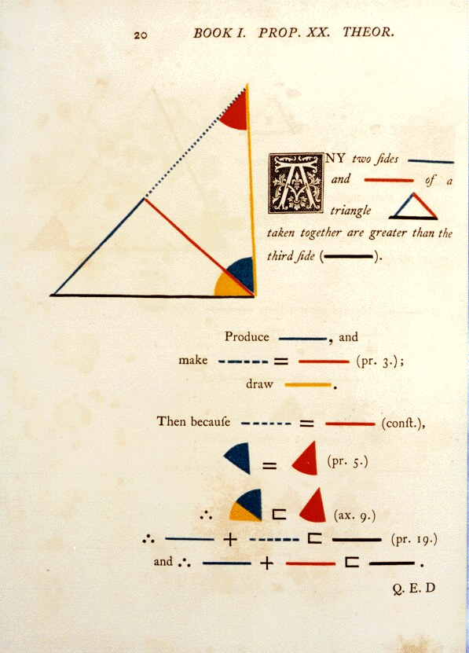
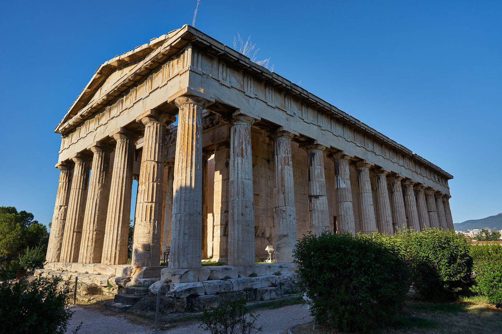
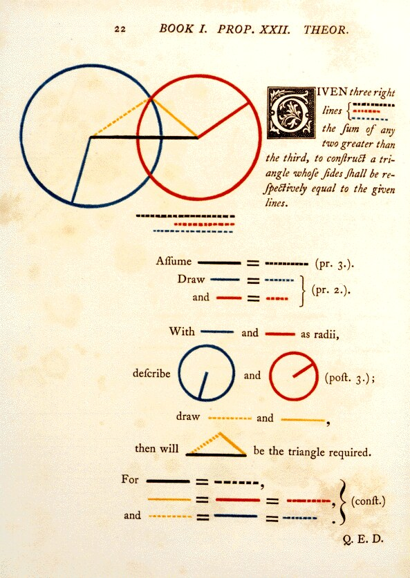

Triangles
MA.K12.MTR.2.1 Show math in many ways. MTR.5.1 Use patterns and structure. MTR.6.1 Check that answers make sense.
Today: build triangles, name their sides, vertices and angles, and tell why a shape is or is not a triangle. Dimensions Math 3B, Chapter 12, Lesson 4 · Triangles

Alexandria, Egypt · about 300 BC

What makes a shape a triangle?
3 straight sides that meet end to end, with no gaps.
You will…
- Build triangles with rods and on a geoboard.
- Name the sides, vertices and angles of a triangle.
- Tell why a shape is or is not a triangle.
A triangle on a temple
This is the Temple of Hephaestus in Athens, Greece. Builders finished most of it about 2,450 years ago. That is about 150 years before Euclid wrote his book. Look at the top of the front, above the columns. The roof makes a big triangle there. It has 3 straight sides that meet at 3 corners. The second picture is a close-up of that triangle.

Greek builders put a big triangle at each end of the roof. Later, in Alexandria, Euclid wrote down what is true about every triangle.
Today's math: build triangles, and find out what makes a shape a triangle.
Warm up with × 7 and × 8 facts. Type each answer, then check. You can fix any answer and check again.
Count the sides and corners
Count the sides of this shape. Then count its vertices, the corners where two sides meet.
Think: Three Rods
🔨 Do · ✏️ WriteEuclid's students lay a long blue rod on the table. They have two more rods. Can the three rods join end to end?
A blue 9 rod lies flat. Each end of it has a gold ring. Under the mat, a purple 4 rod and a black 7 rod wait in the tray. The number on each rod is its length.
Put on the first rod
Drag the purple 4 rod onto the gold ring at the left end of the blue rod.
Put on the second rod
Drag the black 7 rod onto the gold ring at the right end of the blue rod.
Count the sides
Tap each rod in the shape, one at a time, until all 3 sides are counted.
Why a triangle?
You built a triangle. It has 3 straight sides. They meet end to end at 3 vertices, with no gaps, so the shape is closed.
The parts of a triangle
A triangle is a closed shape with 3 straight sides. Where two sides meet is a vertex, so a triangle has 3 vertices. Each vertex has an angle, so a triangle has 3 angles.
Many shapes, still triangles
Big or small, wide or thin, turned any way: if it has 3 straight sides that meet with no gaps, it is a triangle.
Not triangles
Check three things: Are there 3 sides? Are they all straight? Do they meet with no gaps? If any answer is no, it is not a triangle.
Tick marks
When two sides are the same length, we draw the same number of small tick marks on them. Same marks, same length. You'll use these again in the next lesson.
Four ways to stay on track
Your Turn: A Band Triangle
🔨 DoEuclid's students stretch a band around pins to make shapes. Make a triangle of your own.
A geoboard with 11 rows of 11 pins. Tap a pin to hook the band on it. The first pin you tap gets a ring, so you can find it again to close the band.
Make a triangle
Tap 3 pins that are not in one straight line. Then tap the first pin again to close the band.
Count the sides
Tap each side of your triangle, one at a time.
Count the vertices
Tap each gold dot at a corner of your triangle.
Fill in the parts
Ben's Band
🔨 Do · ✏️ WriteBen stretches a band on the geoboard. He says, "It has 3 straight sides, so it's a triangle."
Ben's red band on the geoboard. A gold bracket shows where the band ends and where it started.
Is it a triangle?
Look at the gold bracket. Drag the card that tells about Ben's shape into the box.
Fix Ben's band
Drag the loose end of the band onto the first pin, where the band starts.
Help Ben
Mia's Bent Side
🔨 Do · ✏️ WriteMia draws a shape on the geoboard. She says, "It has 3 sides and 3 corners, so it's a triangle."
Mia's green shape on the geoboard. It has a side on the left, a side on the right, and a side along the bottom.
Is it a triangle?
Look at each side. Drag the card that tells about Mia's shape into the box.
Find the problem
Tap the side that is not straight.
Fix Mia's shape
Press 📏 Swap in a straight band.
Help Mia
Kai's Three Rods
🔨 Do · ✏️ WriteKai picks a brown 8 rod, a red 2 rod and a light green 3 rod. He says, "Any 3 rods make a triangle."
A brown 8 rod lies flat, with a gold ring at each end. The red 2 rod and the light green 3 rod wait in the tray. The dotted lines show how far each short rod can reach when it swings.
Put on the first rod
Drag the red 2 rod onto the gold ring at the left end of the brown rod.
Put on the second rod
Drag the light green 3 rod onto the gold ring at the right end of the brown rod.
Add the short rods
Help Kai
On Your Own: A Square-Corner Triangle
🔨 Do · ✏️ WriteMake a triangle with a square corner. The two sides at the square corner are 3 pin spaces and 5 pin spaces long.
A geoboard with 11 rows of 11 pins. A pin space is the gap from one pin to the next one. The set square waits at the bottom right.
Make the triangle
Tap 3 pins and close the band so it has a square corner, with sides of 3 pin spaces and 5 pin spaces at that corner.
Check the corner
Drag the set square so its square corner lands on the square corner of your triangle.
Tell how you know
Euclid's Rod Rule
🔨 DoA black 7 rod lies flat. A light green 3 rod stands on its left end. Which rods can close the triangle on the right?
The black 7 rod and the light green 3 rod stay put. The tray holds rods from 1 to 10. Under the mat, a chip shows what happened with each rod you try.
Problem 1 · Try every rod
Drag each rod from 1 to 10 onto the gold ring, one at a time, until all 10 rods are tried.
Problem 2 · Find the rule
Euclid proved it: in every triangle, any two sides together are longer than the third side. The 3 rod and the 7 rod make 10 together, so the third rod has to be shorter than 10. A 4 rod is too short: 3 + 4 is only 7, so it lies flat.

Prove It
✏️ WriteProblem 3 · Prove It
Hidden Triangles
A straight line goes from the top vertex of a triangle down to its bottom side. How many triangles can you find in all?
Turn in your work
- Check the list below. Jobs 1 to 8 are required. The Bonus is optional.
- Press 📋 Gather my answers, then 📋 Copy. Or press 🖨️ Print or save as PDF.
- Open this lesson's assignment in Canvas.
- Paste your answers (or upload your PDF and journal photo), then press Submit.
All my answers
Your answers and your work on this page save on this device as you go.
Before you turn in
- I finished Jobs 1 to 8.
- I can build a triangle and name its sides, vertices and angles.
- I can tell why a shape is or is not a triangle.
- I can tell why some sets of 3 rods can't make a triangle.
- I tried the Bonus. (optional)
Lesson 3.12.05 · Properties of Triangles
Next, you'll sort triangles by their sides and angles, and use tick marks to show which sides match.
Piano Concerto No. 1, the "Triangle Concerto"
Franz Liszt finished this piece in 1849. In this part, a player in the orchestra taps a small metal triangle, and it rings out over the strings and the piano. A music writer of the time teased Liszt about all that triangle, and the nickname "Triangle Concerto" stuck.
Franz Liszt, Piano Concerto No. 1 in E-flat major (third part). Played by Debbie Hu, piano, with the UW Symphony. CC BY-SA 2.0, via Wikimedia Commons.